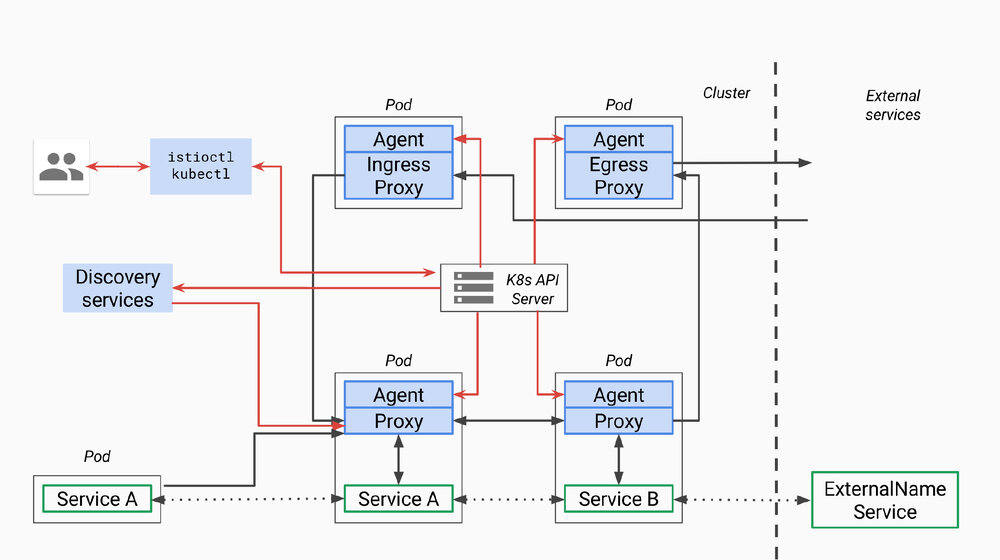
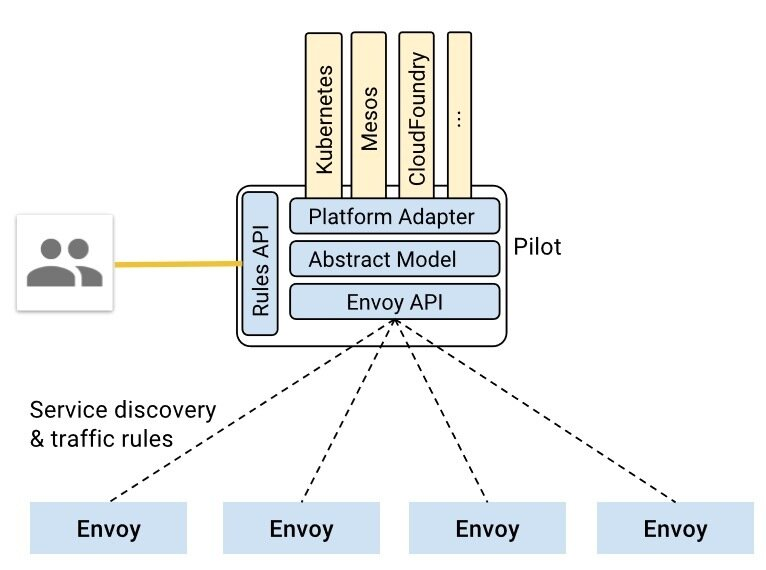

本文为Service Mesh深度学习系列之一：
- Service Mesh深度学习系列part1—istio源码分析之pilot-agent模块分析
- Service Mesh深度学习系列part2—istio源码分析之pilot-discovery模块分析
- Service Mesh深度学习系列part3—istio源码分析之pilot-discovery模块分析（续）
本文分析的istio代码版本为0.8.0，commit为0cd8d67，commit时间为2018年6月18日。
pilot总体架构

首先我们回顾一下pilot总体架构，上面是官方关于pilot的架构图，因为是old_pilot_repo目录下，可能与最新架构有出入，仅供参考。所谓的pilot包含两个组件：pilot-agent和pilot-discovery。图里的agent对应pilot-agent二进制，proxy对应Envoy二进制，它们两个在同一个容器中，discovery service对应pilot-discovery二进制，在另外一个跟应用分开部署的单独的deployment中。
- discovery service：从Kubernetes API Server list/watch
service、endpoint、pod、node等资源信息，监听istio控制平面配置信息（如VirtualService、DestinationRule等）， 翻译为Envoy可以直接理解的配置格式。 - proxy：也就是Envoy，直接连接discovery service，间接地从Kubernetes等服务注册中心获取集群中微服务的注册情况
- agent：生成Envoy配置文件，管理Envoy生命周期
- service A/B：使用了istio的应用，如Service A/B，的进出网络流量会被proxy接管
对于模块的命名方法，本文采用模块对应源码main.go所在包名称命名法。其他istio分析文章有其他命名方法。比如pilot-agent也被称为istio pilot，因为它在Kubernetes上的部署形式为一个叫istio-pilot的deployment。
pilot-discovery的统一存储模型（Abstract Model）

根据上面官方的pilot-discovery架构图，pilot-discovery有两个输入信息（黄色部分）
- 来自istioctl的控制面信息，也就是图中的Rules API，如route rule、virtual service等，这些信息以Kubernetes CRD资源形式保存
- 来自服务注册中心的服务注册信息，也就是图上的Kubernetes、Mesos、Cloud Foundry等。在Kubernetes环境下包括
pod、service、node、endpoint
为了实现istio对不同服务注册中心的支持，如Kubernetes、consul、Cloud Foundry等，pilot-discovery需要对以上两个输入来源的数据有一个统一的存储格式，也就是图中的Abstract Model，这种格式就定义在pilot/pkg/model包下。
举例，下面列表罗列了istio Abstract Model中service的一些成员如何跟根据Kubernetes服务注册信息中的service对象转化得到：
HostName：<name>.<namespace>.svc.cluster.local其中name和namespace分别为Kubernetes service对象的name和所属的namespace。cluster.local为默认domain suffix，可以通过proxy-discoverydiscovery命令的domainflag提供自定义值。Ports： 对应Kubernetes service的spec.ports。Address: 对应Kubernetes service的spec.ClusterIP。ExternalName: 对应Kubernetes service的spec.ExternalName。ServiceAccounts: 对应Kubernetes service的annotation中key值为alpha.istio.io/kubernetes-serviceaccounts和alpha.istio.io/canonical-serviceaccounts的annotation信息。Resolution: 根据情况可以设置为client side LB、DNS Lb和Passthrough。比如对于ClusterIP类型的Kubernetes service，Resolution设置为client side LB，表示应用发出的请求由sidecar（也就是Envoy）负责做负载均衡，而对于Kubernetes中的headless service则设置为Passthrough。
上面pilot-discovery架构图中的Platform Adaptor负责实现服务注册中心数据到Abstract Model之间的数据转换，在代码里，Platform Adaptor包含两部分：
- pilot/pkg/serviceregistry/kube/conversion.go里包括一系列将Kubernetes服务注册中心中的
label、pod、service、service port等Kubernetes资源对象转换为Abstract Model中的对应资源对象的函数 - pilot/pkg/config/kube/crd/conversion.go里包括将
DestinationRule等CRD转换为Abstract Model中的Config对象的函数
在pilot/pkg/bootstrap包下的Server结构体代表pilot-discovery，其中包含3个重要成员负责这两类信息的获取、格式转换、以及构建数据变更事件的处理框架：
ConfigStoreCacheConfigStoreCache对象中embed了ConfigStore对象。ConfigStore对象利用client-go库从Kubernetes获取route rule、virtual service等CRD形式存在控制面信息，转换为model包下的Config对象，对外提供Get、List、Create、Update、Delete等CRUD服务。而ConfigStoreCache在此基础之上还允许注册控制面信息变更处理函数。IstioConfigStoreIstioConfigStore封装了embed在ConfigStoreCache中的同一个ConfigStore对象。其主要目的是为访问route rule、virtual service等数据提供更加方便的接口。相对于ConfigStore提供的Get、List、Create、Update、Delete接口，IstioConfigStore直接提供更为方便的RouteRules、VirtualServices接口。ServiceController利用client-go库从Kubernetes获取pod、service、node、endpoint，并将这些CRD转换为model包下的Service、ServiceInstance对象。
在istio中，使用istioctl配置的VirtualService、DestinationRule等被称为configuration，而从Kubernetes等服务注册中心获取的信息被称为service信息。所以从名称看
ConfigStoreCache、IstioConfigStore负责处理第一类信息，ServiceController负责第二类。
pilot-discovery为Envoy提供的xds服务
所谓xds
基于上面介绍的统一数据存储格式Abstract Model，pilot-discovery为数据面（运行在sidecar中的Envoy等proxy组件）提供控制信息服务，也就是所谓的discovery service或者xds服务。这里的x是一个代词，类似云计算里的XaaS可以指代IaaS、PaaS、SaaS等。在istio中，xds包括cds(cluster discovery service)、lds(listener discovery service)、rds(route discovery service)、eds(endpoint discovery service)，而ads(aggregated discovery service)是对这些服务的一个统一封装。
以上cluster、endpoint、route等概念的详细介绍和实现细节可以参考Envoy在社区推广的data plane api（https://github.com/envoyproxy/data-plane-api），这里只做简单介绍：
- endpoint：一个具体的“应用实例”，对应ip和端口号，类似Kubernetes中的一个pod。
- cluster：一个cluster是一个“应用集群”，它对应提供相同服务的一个或多个endpoint。cluster类似Kubernetes中service的概念，即一个Kubernetes service对应一个或多个用同一镜像启动，提供相同服务的pod。
- route：当我们做灰度发布、金丝雀发布时，同一个服务会同时运行多个版本，每个版本对应一个cluster。这时需要通过route规则规定请求如何路由到其中的某个版本的cluster上。
以上这些内容实际上都是对Envoy等proxy的配置信息，而所谓的cluster discovery service、route discovery service等xxx discovery service就是Envoy等从pilot-discovery动态获取endpoint、cluster等配置信息的协议和实现。为什么要做动态配置加载，自然是为了使用istioctl等工具统一、灵活地配置service mesh。
而为什么要用ads来“聚合”一系列xds，并非仅为了在同一个gRPC连接上实现多种xds来省下几个网络连接，ads还有一个非常重要的作用是解决cds、rds信息更新顺序依赖的问题，从而保证以一定的顺序同步各类配置信息，这方面的讨论可以详见Envoy官网。
Envoy有篇博客叫The universal data plane API。按照Envoy的设想，社区中无论是是实现控制面的团队（比如istio自己），还是实现数据面的团队（比如Envoy、nginx等），大家都能参与并采用github.com/envoyproxy/data-plane-api上规定的这套控制面与数据面之间的data plane api接口。所以虽然repo叫data plane api，但博客的名字加上了universal这个形容词。
xds在pilot-discovery中的实现框架
pilot-discovery在初始化discovery service（xds服务）的过程中（initDiscoveryService方法），创建了discovery server对象，由它负责启动了两个gRPC服务：eds（endpoint discovery service）和ads（aggregated discovery service）。其中单独存在的eds gRPC服务仅仅是为了向后兼容老版本istio而存在，0.8版本的istio主要对外的discovery service就是指ads，而其中已经整合了eds。本文主要的分析的xds就是指ads。
本系列文章的上一篇中说明，pilot-discovery在初始化discovery service的过程中创建了两个服务对象，其中第一个discovery server对象负责为Envoy提供gRPC协议的discovery service，而第二个discovery service对象则负责为Envoy提供REST协议的discovery service。
根据Envoy的data plane api定义，ads需要对外提供的gRPC接口AggregatedDiscoveryServiceServer只有StreamAggregatedResources一个方法。在discovery service初始化过程中创建的pilot/pkg/proxy/envoy/v2包下的DiscoveryServer对象实现了gRPC server端接口。
envoy为方便第三方开发者开发控制面，提供了go-control-plane库。基于go-control-plane库，开发者可以方便地实现基于gRPC协议的discovery service。istio 0.8版使用的go-control-plane版本commit号为
bc01fbf，在这个版本中AggregatedDiscoveryServiceServer接口就只有StreamAggregatedResources一个方法。但是在go-control-plane 2018年7月的一次commit中又为AggregatedDiscoveryServiceServer接口增加了IncrementalAggregatedResources方法，支持更为灵活的discovery service和Envoy之间的交互。
discovery server的主要逻辑，就是在与每一个Envoy建立一个双向streaming的gRPC连接（Bidirectional streaming RPC）之后：
- 启动一个协程从gRPC连接中读取来自Envoy的请求
- 在原来的协程中处理来自各gRPC连接的请求。
discovery server从Envoy收到的请求类型为go-control-plane库下的DiscoveryRequest。DiscoveryRequest几个相对重要的成员如下：
VersionInfoEnvoy在收到一个DiscoveryResponse之后会马上再发送一个DiscoveryRequest作为ACK/NACK，从而告诉discovery service消息是否成功处理。VersionInfo用来表示Envoy端到目前为止成功处理的最新的消息版本。Node.Id连上discovery service的Envoy的唯一标识。标识符当istio部署在不同的服务注册中心（service registry）时会有不同的形式。在Kubernetes作为服务注册中心时，一个可能的Id值为sidecar~172.00.00.000~sleep-55b5877479-rwcct.default~default.svc.cluster.local。以“~”为分割符，可以将Node.Id解析为4部分：- Type：表示Envoy sidecar扮演的角色，如Sidecar，Ingress，Router等
- IPAddress：Envoy sidecar所在pod的IP地址
- ID：Envoy sidecar所在pod的name和namespace，中间用”.“连接，也就是上面例子中的sleep-55b5877479-rwcct.default
- Domain：Envoy sidecar所在pod的namespace加svc.cluster.local，中间用“.”连接，也就是上面例子中的
default.svc.cluster.local关于这四个域的说明的更多信息，详见本系列文章第一篇中关于pilot-agent中role的说明。
ResourceNameEnvoy sidecar关注的资源列表，对于cds、lds来说，ResourceName通常是空的，因为Envoy总是需要知道所有的相关数据。而对于eds，rds来讲，Envoy则可以选择性的指明需要监控的资源对象列表。TypeUrlads服务将原来分开的单独xds服务，如cds、lds等，合并在同一个双向streaming的gRPC连接上。所以当Envoy向discovery server发送DiscoveryRequest时，需要使用TypeUrl来指明当前请求的服务类型。TypeUrl值可以是cds、lds等。ReponseNoncediscovery service的StreamAggregatedResources方法提供的双向streamingads服务中，discovery service可以连续向Envoy发送多个DiscoveryResponse。当Envoy收到DiscoveryResponse后，会发送DiscoveryRequest来ACK之前的DiscoveryResponse。为了减少歧义，Envoy使用ReponseNonce指定当前DiscoveryRequestACK的是之前的哪个DiscoveryResponse。具体设置方式就是把ReponseNonce指定为需要ACK的DiscoveryResponse中的Nonce值，关于discovery server如何在DiscoveryResponse中设置Nonce，详见下文的分析。ErrorDetail当Envoy处理来自discovery server的DiscoveryResponse的过程中发生错误时，会在ACK/NACK的DiscoveryRequest中带上具体错误信息ErrorDetail。
根据discovery server收到的DiscoveryRequest中指定的请求服务类型（TypeUrl），istio的ads服务统一封装了cds、lds、rds和eds4种服务，即在同一个双向streaming的gRPC连接上提供这4种服务。
接下来本文按照ads在配置发生变更时对外的push xds信息的顺序，分别描述cds、eds。由于篇幅限制，rds和lds且听下回分解。
cds服务
如本文前面介绍，cds，即cluster discovery service，是pilot-discovery为Envoy动态提供cluster相关信息的协议。Envoy可以向pilot-discovery的gRPC server发送一个DiscoveryRequest，并将需要获取的配置信息类型（TypeUrl）设置为cds。discovery server，即ads服务的实现类，在收到DiscoveryRequest后，将Abstract Model中保存的相关信息组装成cluster，然后封装在DiscoveryResponse返回给Envoy。
discovery server为了组装出cluster信息，需要从Abstract Model中提取以下两类信息类型；
- 服务注册信息：如从Kubernetes中的服务注册信息转化而来的service
- 通过istioctl提供的配置信息，如
DestinationRule
discovery server将这两类信息组装成cluster信息的流程大致如下：
-
获取abstract model中保存的service信息，为每个service创建一个“空白”的cluster对象 以Kubernetes作为服务注册中心的情况为例，abstract model中的service信息主要有两个来源：
- 在Kubernetes中定义的service资源对象
- 通过istioctl配置的
ServiceEntry资源对象，用来代表那些没有注册在服务注册中心的服务，比如运行在Kubernetes之外的一个数据库。这些资源对象也保存在Kubernetes中，以CRD的形式存在。
-
设置cluster名称，形式为：
outbound|service端口号||Hostname其中的service端口号对应Kubernetes中service对象的端口号，而Hostname就是service mesh中客户端方用来访问服务方的地址，形式为<name>.<namespace>.svc.cluster.local。其中name和namespace分别为Kubernetes service对象的name和所属的namespace，cluster.local为默认domain suffix。其中第三项对cluster来说是空白信息，只对subcluster有效，详见下面的分析。 -
设置cluster的默认流量控制策略，如：默认的负载均衡策略为round robin，默认的timeout时间等。
-
配置与该cluster相关的
eds更新方式。istio中每个cluster都可以单独配置相关eds的更新方式，即告诉Envoy下次请求eds信息时，应该采用何种方式。从istio 2018年4月的一个commit（67be0412）开始统一使用ads作为eds更新方法，而不是单独与discovery server建立gRPC连接来更新eds信息。 -
根据service的
HostName属性查找对应的DestinationRule。根据DestinationRule中定义的subset创建subcluster。 使用istioctl创建的DestinationRule资源可以用来表达同一个服务的多个版本。比如下面的DestinationRule定义了reviews服务的3个subset，每个subset对应reviews服务的一个版本：v1、v2和v3。在Kubernetes环境下翻译过来就是具有label version=v1的service是v1版本的reviews服务，具有label version=v2的service是v2版本的reviews服务，以此类推。 针对这里的每个版本（subset），需要创建一个单独的subcluster（其实就是一个独立的cluster），subcluster具有跟前面创建的cluster有类似的名称，形式为outbound|service端口号|subset名称|Hostname，注意这里的第三项不再是空白。apiVersion: networking.istio.io/v1alpha3 kind: DestinationRule metadata: name: reviews spec: host: reviews trafficPolicy: loadBalancer: simple: RANDOM subsets: - name: v1 labels: version: v1 - name: v2 labels: version: v2 trafficPolicy: loadBalancer: simple: ROUND_ROBIN - name: v3 labels: version: v3
6. 根据DestinationRule里定义的traffic policy，为cluster、subcluster配置流量控制策略,包括connection pool、outlier detection、负载均衡策略， upstream tls设置等。
仔细看上面定义的叫reviews的DestinationRule，我们可以看到里面定义了2个traffic policy，第一个traffic policy定义了整体负载均衡策略为RANDOM，第二个traffic policy专门针对subset v2，设置负载均衡为ROUND_ROBIN。定义在顶层的RANDOM整体负载均衡策略会影响到每个subcluster。
discovery server在组装完成上述cluster对象之后，将得到的所有cluster封装在一个DiscoveryResponse中，将DiscoveryResponse的类型（即TypeUrl）设置为type.googleapis.com/envoy.api.v2.Cluster， Nonce设置为当前时间（nonce的解释见本文前面部分）, 启动单独的协程通过与Envoy建立的双向stream gRPC连接发送给Envoy，发送超时为5秒。
eds服务
Envoy通过cds服务获取service mesh中的cluster（应用集群）信息之后，还需要知道每个cluster所代表的应用集群中的成员信息，即endpoint。因此，Envoy可以在向discovery server调用cds服务之后，继续向discovery server发送TypeUrl为eds的DiscoveryRequest，从而请求endpoint信息。
Envoy发给discovery server的DiscoveryRequest中会在ResourceNames成员中包含它所关注的cluster的名称列表，当前istio支持两种cluster命名方法：
outbound|<port>|<subset name>|<name>.<namespace>其中port为int型的服务端口号，subset name来自对应的DestinationRule中定义的subset的名称，name和namespace分别为service的名称和所属的namespace。<name>.<namespace>.svc.cluster.local|<port name>|<label>这是被deprecated的cluster命名方法，在代码中被戏称为是来自古希腊时代的命名方式。其中name和namespace是对应service的name和所属的namespace，cluster.local是domain suffix，port name是用“,”分隔的一个或多个端口名称，label是用“;”分隔的key=value形式的一个或多个键值对。
Discovery server处理eds类型的DiscoveryRequest的逻辑相对简单，流程如下：
- 根据cluster的名称，把对应Kubernetes中service对象的name和所属的namespace解析出来。使用Kubernetes的client-go库中的
SharedIndexInformer获取Kubernetes中的service对象。 - 使用
SharedIndexInformer获取Kubernetes中的endpoint所有对象（SharedIndexInformer包含了本地缓机制，所以并非每次处理eds类型的DiscoveryRequest都需要从Kubernetes同步大量数据），选择其中name和namespace匹配的endpoint。 - 使用subset中的label（不知道subset中的label代表什么意思的同学，请回忆前面分析
cds中关于subcluster构建过程），比如version=v1，再次过滤上步被筛选过的endpoint。 - 获取endpoint的ip、端口和可用域（availability zone）等信息。其中的可用域由endpoint对应的pod所运行的node上的两个“著名”label的value构成（中间用”/“分隔），label的key分别为：
"failure-domain.beta.kubernetes.io/region"和"failure-domain.beta.kubernetes.io/zone"。 - 根据可用域信息（locality）将endpoint分组，每个locality对应一个
LocalityLbEndpoints对象
Discovery server在获取endpoint之后，将他们封装在DiscoveryResponse中，将DiscoveryResponse的类型（即TypeUrl）设置为type.googleapis.com/envoy.api.v2.ClusterLoadAssignment，Nonce设置为当前时间（nonce的解释见本文前面部分）, 启动单独的协程通过与Envoy建立的双向stream gRPC连接发送给Envoy，发送超时为5秒。
本文作者
丁轶群博士
谐云科技CTO
2004年作为高级技术顾问加入美国道富银行(浙江)技术中心，负责分布式大型金融系统的设计与研发。2011年开始领导浙江大学开源云计算平台的研发工作，是浙江大学SEL实验室负责人，2013年获得浙江省第一批青年科学家称号，CNCF会员，多次受邀在Cloud Foundry, Docker大会上发表演讲，《Docker：容器与容器云》主要作者之一。
原创文章，未经允许，不得转载！